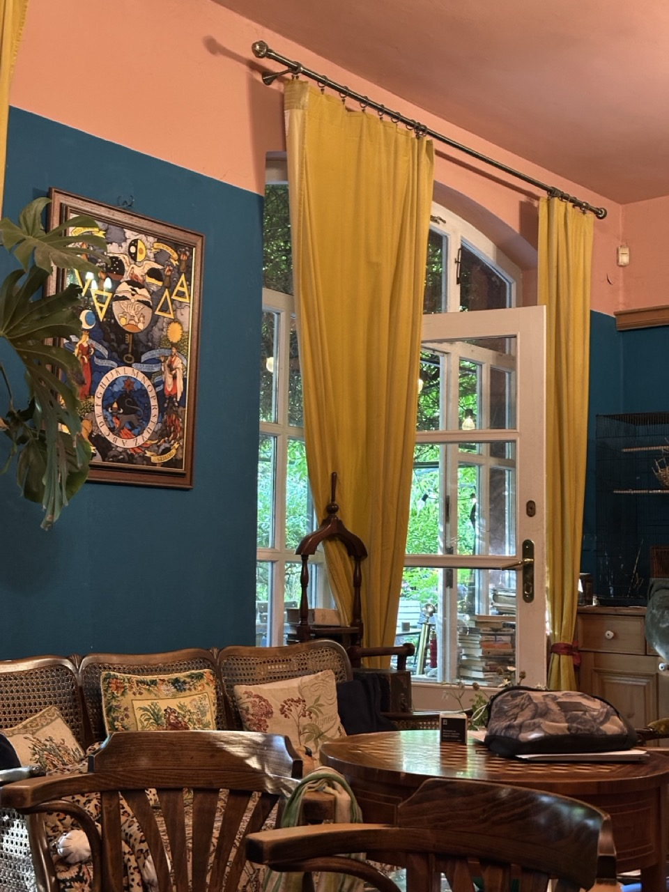
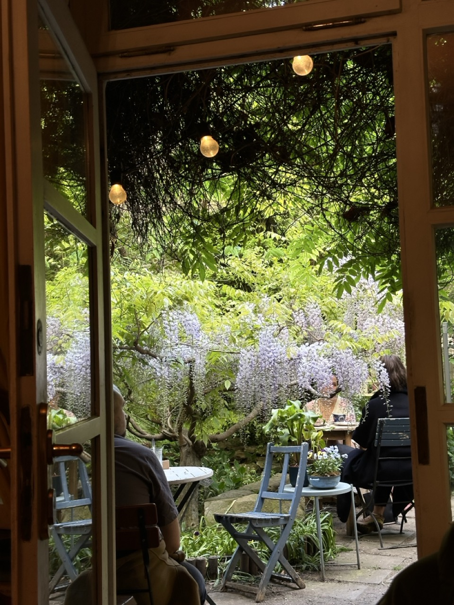
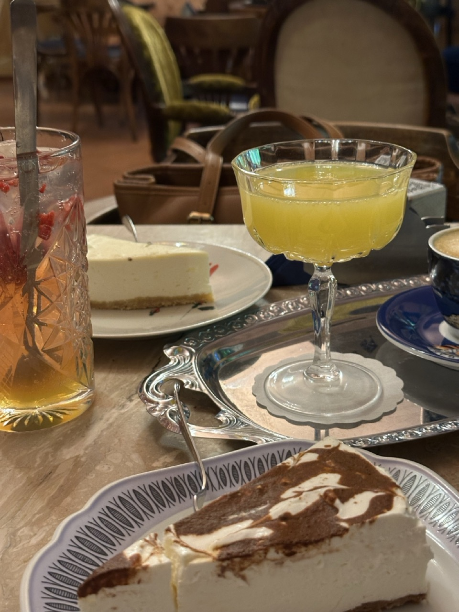

Alchymista
Cukrárna a kavárna Alchymista na Letné je naprostá srdcovka. Má nezaměnitelnou prvorepublikovou atmosféru, díky které člověk okamžitě zapomene na ruch velkoměsta. Je to ideální místo, když si chci v klidu užít odpoledne.
Zahrada a domácí dorty
Největším lákadlem je kromě výborné kávy hlavně kouzelná zahrada ve vnitrobloku plná zeleně. V kombinaci s jejich poctivými domácími dorty a zákusky jde o jedno z nejhezčích kavárenských míst v celé Praze.
Fotogalerie


